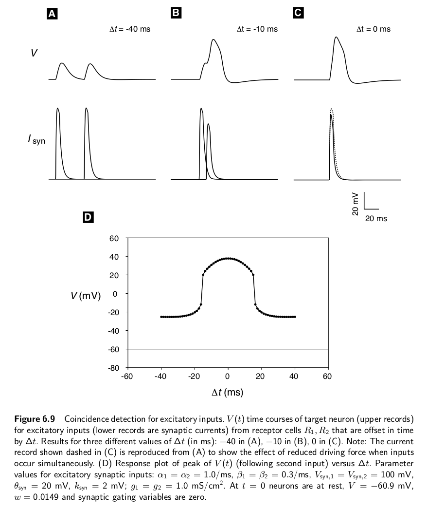

Page
Temporal information processing (e.g., interaural time difference coding and sound localization)
Overview
The mammalian medial superior olive (MSO) and the bird nucleus laminaris extract interaural time differences (ITDs) for sound localization. The Jeffress model posits a delay line and coincidence detector mechanism for this neural computation, as illustrated in the following animation and the video below.
Preparation for class
- Read pp. 363-372 of Baer, Connors, and Paradiso (The Auditory and Vestibular Systems). [PDF]
- Read Carr, C.E., 1993. Processing of temporal information in the brain. Annual review of neuroscience, 16(1), pp.223-243. This review discusses studies of neural coding of temporal information in the neuroethological context of weakly electric fish, barn owls, and echolocating bats. The circuits considered achieve their function using delay lines and coincidence detectors.
In-class discussion
In addition to discussing the reading, we will (probably) learn about coincidence detection, population coding, and stochastic resonance as mechanisms that can lead to hyperacuity in sensory systems. We may also introduce the concept of dendritic computation using Figures 1 & 2 of Agmon-Snir, H., Carr, C.E. and Rinzel, J., 1998. The role of dendrites in auditory coincidence detection. Nature, 393(6682), p.268.
Further reading
- The Carr Lab at University of Maryland
- Ashida, G. and Carr, C.E., 2011. Sound localization: Jeffress and beyond. Current opinion in neurobiology, 21(5), pp.745-751. [PubMed]
- Bullock, T.H., 1984. Comparative neuroscience holds promise for quiet revolutions. Science, 225(4661), pp.473-478.
- Carr, C.E., Soares, D., Parameshwaran, S. and Perney, T., 2001. Evolution and development of time coding systems. Current opinion in neurobiology, 11(6), pp.727-733.
- Carr, C.E. and Christensen-Dalsgaard, J., 2016. Evolutionary trends in directional hearing. Current opinion in neurobiology, 40, pp.111-117.
- Watch the video associated with the article: Jump in communication skills led to species explosion in electric fishes. April 28, 2011 By Diana Lutz, Washington University in St. Louis.
- Take a look at this figure (and the caption) explaining the concept of coincidence detection of excitatory inputs by a post-synaptic neuron.
